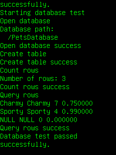

This simple example application demonstrates how to use the MoSync Database API. This example works on all platforms supported by the API (see Feature/Platfom Support).
|  |
| Initial screen (MoSync Emulator) | After test (MoSync Emulator) |
Unfortunately, DatabaseTest is missing from the examples folder included with MoSync SDK. You can get the code for the example from GitHub. The most recent version is here:https://github.com/MoSync/MoSync/blob/master/examples/cpp/DatabaseTest/main.cpp
But unless you are using nightly builds, it is recommended to use this version:https://github.com/MoSync/MoSync/blob/ThreeOne/examples/cpp/DatabaseTest/main.cpp
This version is written to work with the current release (3.1). The latest version uses maDBExecSQLParams, which not yet in the release version of MoSync SDK. If you create a new C++ project in the MoSync IDE and paste that code, it should work to run the example.
The project consists of one file, main.cpp, which contains commented source code to help understand the Database API. The example database used has a table called "pet" which contains data about pets. The database is created by the program. The tests made include making queries and checking that the results match the expected values.